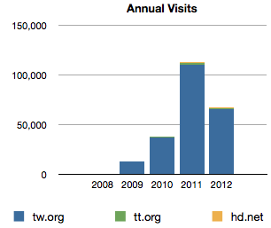
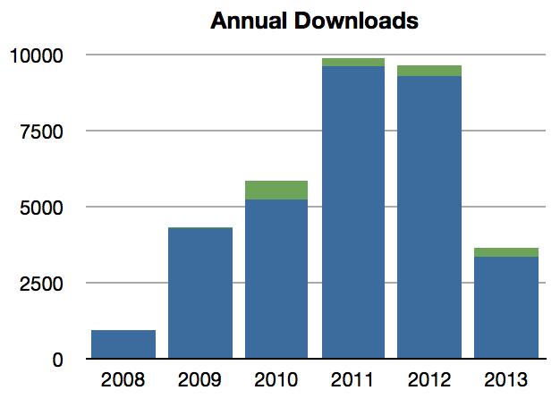
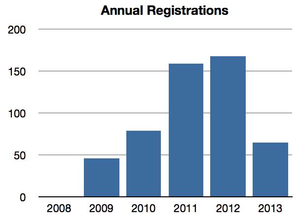
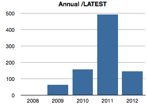
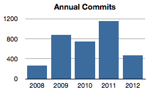
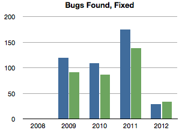
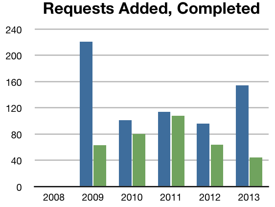

Taskwarrior Annual Statistics
Taskwarrior Annual Statistics
Now that we have enough data, annual statistics can be presented. Annual numbers are not sensitive to seasonal variation, and show more reliable indicators of trends.

Visits to taskwarrior.org and assorted web sites.
Note that visits have tripled for the last two years, but that is
not going to continue.
Despite low web traffic recently, 2012 is on track to equal 2011,
despite the big 2011 HackerNews spike.

Downloads direct from taskwarrior.org and SourceForge.
Other sources of packages exist, but we do not have data.

Registrations to taskwarrior.org. These numbers indicate the number of
users that are reporting bugs or involved in discussions. It is the
trend that is significant.

There is a data problem that means this chart is likely wrong.

Despite recent slowdown, activity in the code repository has increased.
This is not something that the monthly statistics reveal.
2012, on the other hand, looks like a quiet year.

There is a consistent 80% rate at which bugs are fixed. It's not clear
why this should be so. Perhaps it indicates that some bugs are either
too hard to fix, or not really bugs, and are perhaps disguised feature
requests.
Given that there are essentially an unlimited number of bugs in any piece
of software, this increased find rate is likely due to a larger number of
users.
The fix rate is most impressive though - over 100 bugs/yr.

As features are added to the software, it makes sense that the number of
requests would decrease.
Encouragingly, the rate at which requests are fulfilled has risen lately.
It is suspected that this is because many capabilities were not possible
until the new command line syntax came along, but when it did, many
requests were satisfied.
Copyright © 2012, Göteborg Bit Factory.